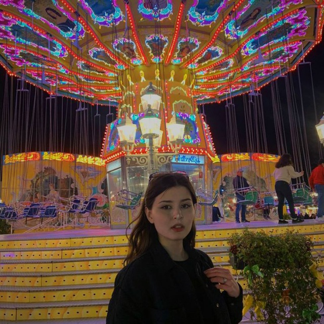

UA
Curriculum vitae
Personal information
- Full name: Olha Haliuk
- City: Ivano-Frankivsk
- Number: +380688658476
- Gmail: olya6837@gmail.com

Social media:
- Instagram
- Facebook
Student of the 1st year on the specialty 121 "Software engineering" correspondence form of education.
She received a full secondary education in Gymnasium No. 2. I have a high average score in all subjects.
I live in Ivano-Frankivsk. I speak English (level b2), Ukrainian.